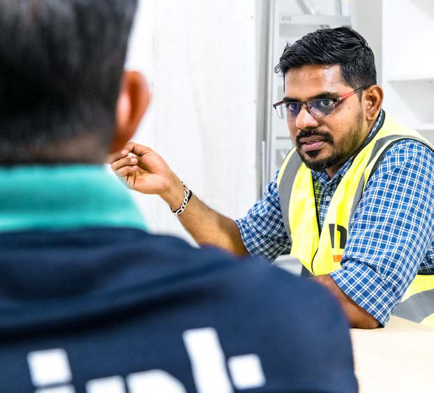

Modern ELV scopes can include structured cabling, fibre backbones, security systems, access control, CCTV, BMS interfaces, energy monitoring, audio-visual systems and increasingly IoT-enabled devices. These systems are often procured through multiple vendors, some client-direct, others consultant-led. Interfaces between trades are no longer simple handovers. They require coordinated integration across mechanical, electrical and digital platforms.
From a delivery perspective, this creates risk if not managed early and deliberately. Programme sequencing is affected by technology installation and commissioning requirements. Ceiling closures may depend on access control cabling. Mechanical systems may rely on BMS integration before full testing can be completed. Security interfaces may require coordination between base build and fit-out scopes. When responsibilities are unclear, delays and cost variations follow.
ELV cannot be treated as a standalone package delivered at the tail end of a project. It must be coordinated from the outset, aligned with containment strategies, power distribution, plant interfaces and commissioning plans. Early design clarity, structured coordination and defined accountability reduce the likelihood of late-stage rework.
Mint has recognised that technology integration is becoming a differentiator in how projects are delivered. The conversation with clients increasingly extends beyond air-conditioning capacity and electrical loads to include digital resilience, data security and long-term system performance. The company has strengthened its internal capability accordingly: developing clearer coordination protocols between M&E and ELV systems, expanding specialist technical oversight and building regional knowledge across Singapore, Malaysia and Thailand.
The objective is not to duplicate specialist vendors, but to ensure that integration risk is actively managed within the overall delivery framework. Clearer definition of interfaces reduces ambiguity in procurement.
The trajectory is clear. Buildings are becoming more connected, more monitored, more dependent on data. As this continues, the distinction between traditional engineering and digital infrastructure will narrow. Technology is no longer an add-on. It is embedded within the fabric of modern building performance.
